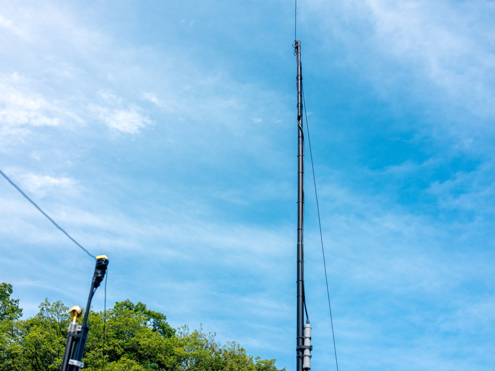

TWO BASES
2つの無線拠点The Two Radio Bases

大磯固定基地局Oiso Base Station
OBS — 200W RF TRANSMISSION BASE ／ KANAGAWA
4基のアンテナ群を空に伸ばす、本システム唯一の電波送信基地。The system's sole RF transmission base, equipped with four antennas.

東京リモート局Tokyo Remote Station
TRS — MAIN OPERATING BASE ／ NIHONBASHI, TOKYO
日本橋の高層階から大磯の電波を操る、メイン運営基地。The main operating base, commanding Oiso's transmitters from a high floor in Nihonbashi.